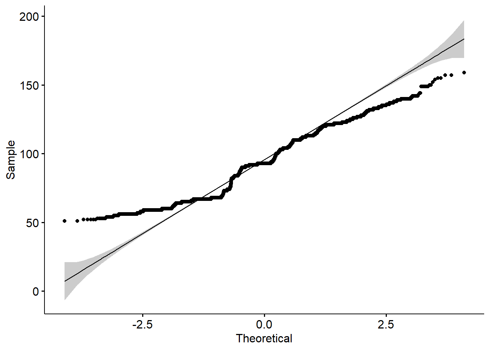

packages = c('readr', 'tidyr', 'ggstatsplot', 'tidyverse', 'plotly', 'ggplot2')
for(p in packages){
if(!require(p,character.only = T)){
install.packages(p)
}
library(p,character.only = T)
}Take-home Exercise 3
Putting Visual Analytics into Practical Use
1. The task
In this take-home exercise, you are required to uncover the salient patterns of the resale prices of public housing property by residential towns and estates in Singapore by using appropriate analytical visualisation techniques learned in Lesson 4: Fundamentals of Visual Analytics. Students are encouraged to apply appropriate interactive techniques to enhance user and data discovery experiences.
For the purpose of this study, the focus should be on 3-ROOM, 4-ROOM and 5-ROOM types. You can choose to focus on either one housing type or multiple housing types. The study period should be on 2022.
The write-up of the take-home exercise should include but not limited to the followings:
- Describe the selection and designed consideration of the analytical data visualisation used. The discussion should limit to not more than 150 words each.
- A reproducible description of the procedures used to prepare the analytical visualisation. Please refer to the peer submission I shared.
- A write-up of not more than 100 words to discuss the patterns reveal by each analytical visualisation prepared.
2. Data
Resale flat princes based on registration date from Jan-2017 onwards should be used to prepare the analytical visualisation. It is available at
3. Step to create plot in R
1. Installing and loading the required libraries
The code chunk below is used to install and load the required packages onto RStudio.
- tidyverse : A collection of core packages designed for data science, used extensively for data preparation and wrangling.
- plotly: Used for creating interactive web-based graphs.
- ggplot2: A system for ‘declaratively’ creating graphics, based on “The Grammar of Graphics”.
2. Importing the dataset
The source file is in csv format, hence read_csv of readr package is used to import the dataset. From the result below, we will see that our original data has 146,215 rows with 11 columns ( 8 categorical fields and 3 numeric fields).
Resale_raw <- read_csv("Data/resale-flat-prices-based-on-registration-date-from-jan-2017-onwards.csv")
summary(Resale_raw) month town flat_type block
Length:146215 Length:146215 Length:146215 Length:146215
Class :character Class :character Class :character Class :character
Mode :character Mode :character Mode :character Mode :character
street_name storey_range floor_area_sqm flat_model
Length:146215 Length:146215 Min. : 31.00 Length:146215
Class :character Class :character 1st Qu.: 82.00 Class :character
Mode :character Mode :character Median : 94.00 Mode :character
Mean : 97.61
3rd Qu.:113.00
Max. :249.00
lease_commence_date remaining_lease resale_price
Min. :1966 Length:146215 Min. : 140000
1st Qu.:1985 Class :character 1st Qu.: 358000
Median :1996 Mode :character Median : 448000
Mean :1996 Mean : 477991
3rd Qu.:2007 3rd Qu.: 565000
Max. :2019 Max. :1418000 Use head command to see the first 5 rows of the data.
head(Resale_raw,5)# A tibble: 5 × 11
month town flat_…¹ block stree…² store…³ floor…⁴ flat_…⁵ lease…⁶ remai…⁷
<chr> <chr> <chr> <chr> <chr> <chr> <dbl> <chr> <dbl> <chr>
1 2017-01 ANG MO … 2 ROOM 406 ANG MO… 10 TO … 44 Improv… 1979 61 yea…
2 2017-01 ANG MO … 3 ROOM 108 ANG MO… 01 TO … 67 New Ge… 1978 60 yea…
3 2017-01 ANG MO … 3 ROOM 602 ANG MO… 01 TO … 67 New Ge… 1980 62 yea…
4 2017-01 ANG MO … 3 ROOM 465 ANG MO… 04 TO … 68 New Ge… 1980 62 yea…
5 2017-01 ANG MO … 3 ROOM 601 ANG MO… 01 TO … 67 New Ge… 1980 62 yea…
# … with 1 more variable: resale_price <dbl>, and abbreviated variable names
# ¹flat_type, ²street_name, ³storey_range, ⁴floor_area_sqm, ⁵flat_model,
# ⁶lease_commence_date, ⁷remaining_lease3. Wrangling data
3.1 Filter the analyzing year of 2022
Separating column using separate(). Filter only Year of 2022, select interested columns.
Resale <-Resale_raw %>%
separate(`month`, into = c("Year", "Month"), sep = "-") %>%
filter(Year == "2022") %>%
select("town", "flat_type", "storey_range", "floor_area_sqm", "lease_commence_date", "resale_price", "Year", "Month")3.2 Filter flat types 3-Room, 4-Room, 5-Room
Resale <- Resale %>%
filter(flat_type %in% c("3 ROOM","4 ROOM", "5 ROOM"))3.3 Change format of price to represent in kSGD
Resale <- Resale %>%
mutate(resale_price=resale_price/100) %>%
rename('resale_price_kSGD' = 'resale_price')Here, we can see that our data now only has 24,374 rows left after filter year and flat type.
Resale# A tibble: 24,374 × 8
town flat_type storey_range floor_area_sqm lease_…¹ resal…² Year Month
<chr> <chr> <chr> <dbl> <dbl> <dbl> <chr> <chr>
1 ANG MO KIO 3 ROOM 07 TO 09 73 1977 3580 2022 01
2 ANG MO KIO 3 ROOM 07 TO 09 67 1978 3550 2022 01
3 ANG MO KIO 3 ROOM 07 TO 09 68 1981 3380 2022 01
4 ANG MO KIO 3 ROOM 07 TO 09 82 1980 4200 2022 01
5 ANG MO KIO 3 ROOM 04 TO 06 67 1980 3280 2022 01
6 ANG MO KIO 3 ROOM 01 TO 03 83 1979 3600 2022 01
7 ANG MO KIO 3 ROOM 01 TO 03 67 1980 3000 2022 01
8 ANG MO KIO 3 ROOM 04 TO 06 67 1979 3330 2022 01
9 ANG MO KIO 3 ROOM 04 TO 06 67 1979 3860 2022 01
10 ANG MO KIO 3 ROOM 10 TO 12 67 1980 3300 2022 01
# … with 24,364 more rows, and abbreviated variable names ¹lease_commence_date,
# ²resale_price_kSGD4. Exploratory Data Analytics
4.1 Plotting histogram of resale price
set.seed(1234)
gghistostats(
data = Resale,
x = 'resale_price_kSGD',
type = "bayes",
test.value = 60,
xlab = "resale_price (kSGD)"
)
4.2 Plotting histogram of floor area
set.seed(1234)
gghistostats(
data = Resale,
x = 'floor_area_sqm',
type = "bayes",
test.value = 60,
xlab = "floor_area_sqm"
)
4.3 Two sample mean test on resale price between flat types
ggbetweenstats(
data = Resale,
x = 'flat_type',
y = 'resale_price_kSGD',
type = "np",
messages = FALSE
)
4.4 Box plot of resale price by flat types
# Use single color
ggplot(Resale, aes(x=flat_type, y=resale_price_kSGD)) +
geom_boxplot(fill='#A4A4A4', color="black")+
stat_summary(fun.y=mean, geom="point") +
theme_classic()Warning: The `fun.y` argument of `stat_summary()` is deprecated as of ggplot2 3.3.0.
ℹ Please use the `fun` argument instead.
# Change box plot colors by groups
p<-ggplot(Resale, aes(x=flat_type, y=resale_price_kSGD, fill=flat_type)) +
geom_boxplot() +
stat_summary(fun.y=mean, geom="point", color="red") +
theme(legend.position="none")
# Remove legend
p
4.5 Box plot of resale price by town
Resale %>%
mutate(class = fct_reorder(town, resale_price_kSGD, .fun='mean')) %>%
ggplot( aes(x=reorder(town, resale_price_kSGD), y=resale_price_kSGD))+
geom_boxplot() +
stat_summary(fun.y=mean, geom="point", color="red") +
theme(legend.position="none") +
theme(axis.text.x = element_text(angle = 90, vjust = 0.5, hjust=1))